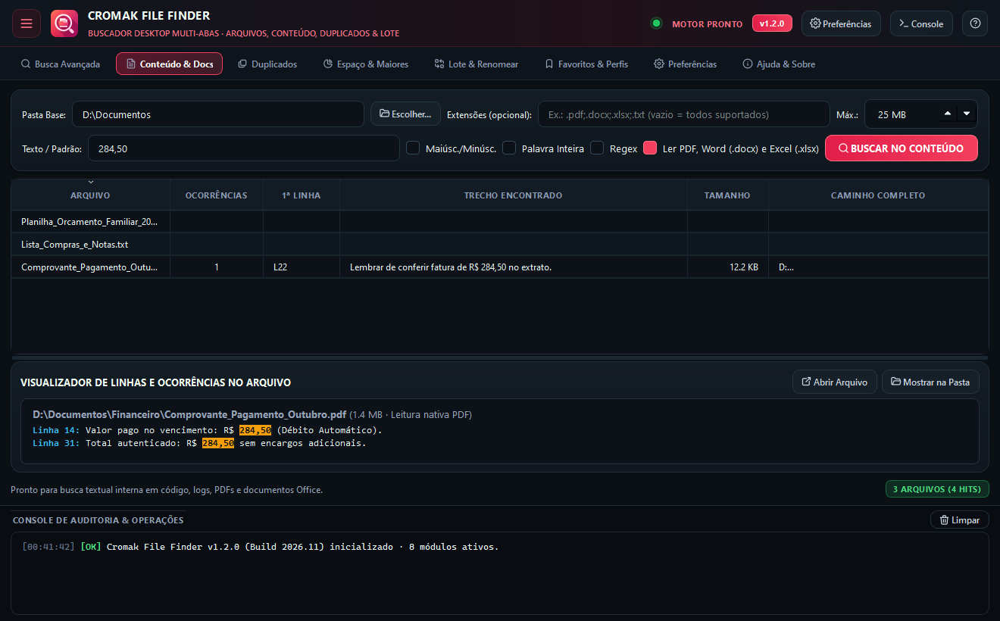
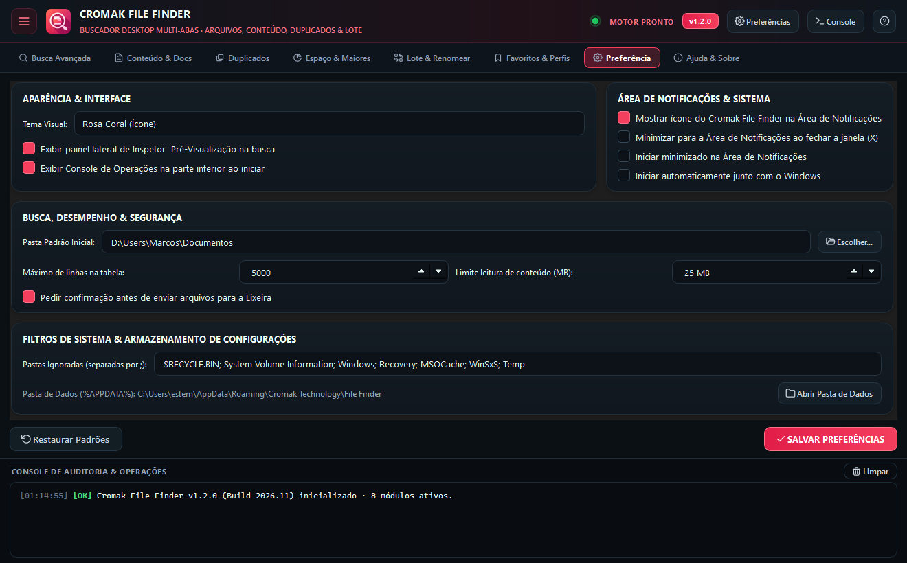

Cromak File Finder
Instant Desktop Search, Document Content Grep, Duplicate Hunter & Batch Renamer
High-velocity desktop workstation crafted in PyQt6 Dark Premium with 8 integrated modules. Scan multiple drives simultaneously, uncover text hidden inside PDFs, Word (.docx), Excel (.xlsx), and source code, reclaim gigabytes from true cryptographic duplicates, and batch-rename hundreds of files with live preview and Undo.
Version: 1.2.0 (Build: 2026.11) • Native 64-bit Architecture • 3 Live Themes (Coral Rose, Emerald & Cyan)

8 Productivity Modules in One Unified Workstation
Built to replace sluggish OS search bars and consolidate auditing, cleanup, and batch organization into instant tabs.
Multi-Folder Indexing & Regex
Scan multiple directories and drives concurrently via asynchronous os.scandir, filtering in real time by wildcards (*.pdf;*.xlsx), Regex, custom MB bounds, and dates.
PDF, Word & Excel Content Search
Locate contract clauses, IDs, API keys, or code snippets inside PDF, Word (.docx), Excel (.xlsx), JSON, XML, and scripts with exact line numbers and highlighted context.
3-Stage SHA-256 Duplicate Hunter
Matches exact byte size, 4 KB quick edge signatures, and full SHA-256 / MD5 digests, with 1-click smart rules to keep the newest, oldest, or shortest-path copy.
Disk Space & Largest Files Analyzer
Monitor live usage across all local drives, rank the heaviest files on your PC, inspect category percentages, and double-click to drill down into subfolders.
Batch Renamer & Smart Organizer
Live Before → After preview with Find/Replace, Regex, sequential numbering, accent stripping, one-click Undo, and automatic folder sorting by Category or Year-Month.
Side Inspector & Rich Reports
Preview image thumbnails, document text, and CRC32 / MD5 / SHA-256 hashes right beside your results, and export full inventories to CSV, styled HTML, or JSON.
Find in Seconds What Windows Explorer Takes Minutes to Scan
Stop waiting on endless green progress bars or installing heavy background indexers that drain RAM all day. Cromak File Finder v1.2.0 runs strictly on demand with dedicated worker threads and complete offline privacy:
Head-to-Head Comparison
See how Cromak File Finder v1.2.0 outperforms default Windows Search and single-purpose utilities.
| Capabilities | Windows Explorer Search | Basic Search Utilities | Cromak File Finder v1.2.0 |
|---|---|---|---|
| Multi-Folder Scan & Regex | Single folder only, no Regex | Filename matching only | Multi-Folder + Wildcards + Instant Regex |
| PDF, DOCX & XLSX Content Grep | Relies on slow OS iFilters, no line preview | Plain .txt files only | Native Extraction + Line Numbers & Highlights |
| Cryptographic Duplicate Finder | Not available | Requires buying a separate tool | Built-in 3-Stage Engine (SHA-256 / MD5) |
| Space Analyzer & Batch Renamer | Basic (1), (2) numbering only | No folder organizer or Undo | Disk Analyzer + Live Preview Batch & Undo |
| Reports & Lifetime Cost | No file list export | $29–$49/year subscriptions | CSV / HTML / JSON · $9.99 Lifetime |
Module Tour & Interface Gallery
Click any screenshot to expand in full resolution and inspect every tab of Cromak File Finder.
Advanced Search & Live Inspector
One-click drive shortcuts, combined multi-criteria filters, instant document/image preview, and on-demand hash computation.

Content & Document Grep (PDF/DOCX/XLSX)
Search exact terms or Regex inside Office documents and codebases with immediate highlighted line context.

Smart Duplicate Hunter
Recoverable disk space KPIs and 1-click auto-selection rules to preserve newest, oldest, or shortest-path files.

Space Analyzer & Largest Subfolders
Drive health cards, heaviest-file rankings, category occupancy bars, and double-click subfolder drill-down.

Batch Renamer & Undo
Inspect live Before/After filenames, prevent collisions automatically, and sort files into Category or Year-Month folders.

Saved Profiles, Favorites & History
Run recurring search presets in one click, pin favorite directories, and customize globally ignored folders.
Multi-Threaded PyQt6 Architecture
-
Iterative Win32 Directory Enumeration (os.scandir)
Reads file sizes, timestamps, and hidden flags directly from directory entries without redundant stat syscalls, scanning tens of thousands of files per second.
-
3-Stage Deduplication Pipeline (Size → 4 KB → SHA-256)
Eliminates non-duplicates immediately via fast
BLAKE2bedge signatures before running full cryptographic hashes, minimizing SSD/HDD wear. -
Native Shell32 Recycle Bin & Isolated AppData
Safe file removal via native Windows
SHFileOperationWand clean local configuration stored under%APPDATA%\Cromak Technology\File Finder.
Strict Offline Privacy & Document Confidentiality
All indexing and document parsing runs 100% locally on your workstation. Zero filenames, document contents, or hashes ever leave your PC.

Simple, Affordable Licensing
Evaluate all 8 modules free for 40 days, or unlock your perpetual lifetime PRO license for just $9.99.
40-Day Free Trial
- All 8 tabs unlocked for evaluation
- Advanced Search + PDF / Word / Excel Grep
- SHA-256 Duplicate Hunter & Space Analyzer
- Batch Renamer & Organizer with Undo
- 3 built-in Dark Premium themes
- Shows evaluation reminder on startup
- Continuous & commercial use requires PRO after trial
Perpetual Lifetime PRO
- Perpetual Lifetime License (Pay Once, Own Forever)
- Zero Evaluation Prompts or Subscriptions
- Personal, Corporate & Commercial Use Included
- Unlimited CSV, HTML & JSON inventory exports
- All 8 engines unlocked at full speed
- Free 1.x series updates
- Priority official Cromak Technology support
Fast permanent activation via official Cromak support
One-time lifetime license with zero recurring fees · Windows 10 & Windows 11 (64-bit).
Frequently Asked Questions (FAQ)
Can I scan multiple drives or separate folders in a single search?
Yes! Click + Folder or separate directories with semicolons (e.g., C:\Documents; D:\Projects; E:\Backups) to index and filter all of them in one unified table.
Does PDF, Word, and Excel content search require Microsoft Office installed?
No. The Content & Docs engine parses .pdf, .docx, .xlsx, logs, and source code directly using built-in readers, highlighting every matching line automatically.
Can I undo a batch rename operation?
Yes. In addition to live Before/After collision checks prior to execution, the Batch & Rename tab maintains an Undo stack so you can restore original filenames in one click.
Are there any recurring fees on the $9.99 license?
Never. $9.99 USD is a single lifetime payment covering personal, corporate, and commercial workstations.